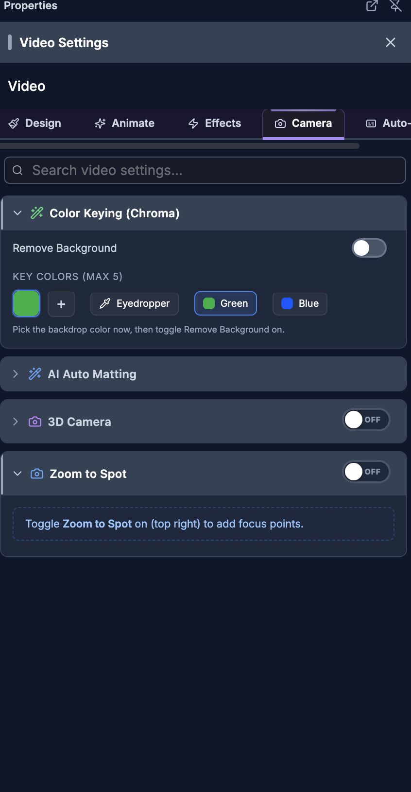

SkillTown Video Editor
Camera Effects
For humans — and for AI helping humans. This document describes how a person edits video by
hand using the on-screen controls of the SkillTown video editor. It is not an AI skill or an
automation API, so if you are an AI agent, do not treat these steps as callable commands — for
programmatic/automated editing use the agent skills and commands documented elsewhere (see
_Agent/AGENTS.md). You may, however, read this doc to answer a user's "how do I…" questions
and walk them, step by step, through performing these actions themselves in the editor UI.
Add cinematic camera movement to a selected clip, including 3D zoom, pan, tilt, roll, focus-point zooms, and chained movement sequences.
Where to find it
- Select a supported video, image, or scene/template item on the canvas or timeline.
- Open the properties panel for the selected item.
- For video items, open the Effects tab, then use 3D Camera or Zoom to Spot.
- For image and scene/template items, look for the 3D Camera and Zoom to Spot sections in the properties panel.
- Turn on the switch in the section header. The switch shows ON when the effect is active and OFF when it is inactive.
- If a section says Toggle 3D Camera on (top right) to add camera moves. or Toggle Zoom to Spot on (top right) to add focus points., turn on the matching switch first.
What you can do
- Use 3D Camera to add preset movement such as Orbit Right, Push In, Ken Burns, slides, tilts, and hover moves.
- Use Pick a movement preset to quickly add a camera move, then refine it in Your moves.
- Use Adjust to tweak the current frame with a direct camera pad: drag to pan, scroll to zoom, and drag Pan, Tilt, and Roll chips to rotate.
- Use Zoom to Spot to create zoom targets with Zoom, Hold, Transition, Frame, X %, Y %, and Easing controls.
- Set a focus point visually with the large picker, with the canvas overlay, or by editing exact percentages.
- Use Animation Timeline and All keyframes to select, retime, duplicate, mute, edit, or delete camera keyframes.
- Use Sequence to chain multiple movements back-to-back and apply them as one camera sequence.
- Use Advanced for per-channel editing of Scale, Rotation, Position, global depth/default zoom, and cleanup actions.
How to choose the right camera tab

- Open 3D Camera and switch it ON.
- Use the three tabs according to what you need:
| Tab |
Main controls |
Use it for |
| Adjust |
Tweak the current frame, direct camera pad, Pan ↔, Tilt ↕, Roll ↻, Set keyframe at playhead, Keyframe set — click to remove |
Visual one-frame camera positioning, panning, zooming, and rotation. |
| Sequence |
Add step, preset buttons, duration sliders, Apply Sequence, Even, Clear |
Chaining multiple preset moves back-to-back across the selected clip. |
| Advanced |
Scale, Rotation, Position, Show Overlay Markers, Global settings (depth, default zoom), Reset at Playhead, Clear All |
Exact per-channel keyframe editing and global camera settings. |
How to add a 3D camera movement preset
- Select the clip you want to animate.
- Open 3D Camera and switch it ON.
- Expand Pick a movement preset.
- Click a preset. The helper text says: Click to add it to your clip. You can adjust or remove it below.
| Preset |
What it does |
| Orbit Right |
Smooth orbit from left to right. Starts with the camera angled one way, then glides across the subject. |
| Orbit Left |
Smooth orbit from right to left. Mirrors Orbit Right for the opposite sweep. |
| Tilt Up |
Vertical tilt from low to high. Useful for revealing height or moving from foreground to hero subject. |
| Tilt Down |
Vertical tilt from high to low. Useful for settling onto a subject from above. |
| Push In |
Dolly zoom forward with subtle tilt. Creates a gradual punch-in toward the clip. |
| Pull Out |
Dolly zoom backward, scene reveals. Starts closer and pulls back to show more context. |
| Dramatic |
Multi-point cinematic sweep with zoom. Combines rotation, roll, and zoom for a more expressive move. |
| Hover |
Subtle floating motion loop. Adds gentle drifting rotation without a strong direction. |
| Ken Burns |
Slow zoom + gentle pan drift. Adds a documentary-style push and pan. |
| Slide Right |
Pan from left to right. Moves the camera horizontally across the frame. |
| Slide Left |
Pan from right to left. Moves the camera horizontally in the opposite direction. |
| Hold / Pause |
Freeze at current values for a segment. Use it as a still moment between stronger moves. |
- The move appears in Your moves and as a colored bar in Animation Timeline.
- If Your moves is collapsed, expand it. Each move card shows its name, start/end timing, a Jump to start diamond, and Remove this move.
- Expand a move to edit:
- Strength: choose subtle, normal, or strong.
- Start: moves where the preset begins.
- Duration: changes how long the preset lasts.
- Use Clear all in Your moves to remove all movement presets and their camera keyframes.
How to adjust the camera at the current frame
- Open 3D Camera and choose Adjust.
- Use the Tweak the current frame area. The helper text says: Drag to pan, scroll to zoom, sliders for rotation. Changes here only affect the current frame.
- In the direct camera pad:
- Drag the pad to pan or position the camera.
- Hold Shift while dragging to snap pan to thirds.
- Scroll to zoom. When Scroll-zoom is on, the pad captures scroll for zooming; when it is off, the page can scroll normally.
- Hold Alt while scrolling to zoom on the cursor when there is no active rotation.
- Double-click to reset pan and zoom. Shift + double-click also resets rotation.
- Use arrow keys to nudge pan; hold Shift for a larger nudge.
- Use + or = to zoom in, - or _ to zoom out, r to reset pan and zoom, and R to reset rotation.
- Drag the edge chips:
- Pan: drag left or right to orbit the camera.
- Tilt: drag up or down to tilt the camera.
- Roll: drag left or right to roll the camera.
- Use the perspective preset button near the top-left of the pad. It cycles through Front, Hero, Reveal, Dutch, Worm, and Top-Down.
- Use the rotation sliders for precise values:
- Pan ↔ adjusts side-to-side 3D rotation.
- Tilt ↕ adjusts up/down 3D rotation.
- Roll ↻ adjusts roll.
- Click Set keyframe at playhead to save the current pan, zoom, and rotation. If a keyframe is already at the playhead, the button reads Keyframe set — click to remove.
- Use Reset on the pad to reset perspective rotation, or use the reset icon next to the keyframe button to Reset all channels to neutral at the playhead.
The pad tells you how edits will be stored: on keyframe · edits update means changes update an existing keyframe; interpolated · edits add new means the next edit creates a new keyframe at the playhead.
How to zoom to a point of interest
- Select the clip.
- Open Zoom to Spot and switch it ON.
- In Zoom Targets, use the large picker to aim the blue target dot.
- Click or drag in the picker to place the target. The picker tooltip says Click or drag to set zoom target.
- Scroll on the picker to change zoom. Use Scroll-zoom if you need to turn scroll-to-zoom on or off.
- Use these controls before adding the zoom:
| Control |
What it changes |
| Zoom |
The amount of zoom. 1× is no zoom, <1× pulls back to reveal, and >1× punches in. |
| Hold |
How long the camera stays at the target after zooming in. |
| Transition |
How long the camera takes to enter and exit the target. |
- Click Add zoom at playhead to create the zoom at the current playhead time.
- The zoom appears as a bar in Animation Timeline and as a row in the zoom list.
- To create another zoom while editing an existing one, click + New or Deselect.
How to edit zoom targets and focus points
- In Zoom Targets, click an existing zoom row or click its bar in Animation Timeline.
- When selected, the picker helper changes to ✏️ Editing existing zoom — click & drag to reposition · scroll to adjust zoom.
- Edit the expanded row controls:
| Control |
What it changes |
| Frame |
The frame where the zoom starts. Moving it also seeks the playhead. |
| Zoom |
The target zoom amount. |
| X % |
The horizontal target point, from left to right. |
| Y % |
The vertical target point, from top to bottom. |
| Hold |
The center hold duration in seconds. |
| Transition |
The in/out transition duration in seconds. |
| Easing |
The motion curve used for entering and exiting the zoom. |
- In Animation Timeline, drag the body of a zoom bar to move it.
- Drag the left edge to Drag to change start. Drag the right edge to Drag to change end.
- Use the eye button to Mute this zoom (keep values). If muted, use Enable this zoom to restore it.
- Use the copy button to Duplicate this zoom +1s.
- Use the trash button to Delete zoom.
- Press Escape to deselect a zoom. Press Delete or Backspace to remove the selected zoom, unless you are typing in a field.
How to set a focus point on the canvas
- Open 3D Camera, choose Advanced, and turn on Show Overlay Markers.
- The helper text under the switch says Focus point + rotation indicators on canvas.
- With the clip selected, hold Alt on the canvas. The overlay can show Click to place focus point.
- Click the point you want the camera to focus on.
- If the canvas overlay toolbar is visible, use Focus to click a zoom focus point directly on the video. The bottom controls show Zoom:, In:, Hold:, and Click on video to set focus.
- Use Rotate when you want to drag on the canvas instead. The overlay explains Drag horizontally = orbit · Drag vertically = tilt.
- Use Close controls to hide the overlay toolbar.
- If a zoom is active at the current time, the click moves that focus point. Otherwise, it creates a new focus point using the default zoom timing.
You can also set the same kind of focus point in Zoom to Spot with the large picker. That is usually easier because Zoom, Hold, Transition, and Animation Timeline are all visible together.
How to use the camera timeline
- Open 3D Camera and switch it ON.
- Look below the tabs for Animation Timeline.
- Click empty space in the strip to scrub the selected clip. If no moves or keyframes exist, the hint says Click anywhere to scrub · Pick a movement below.
- Colored bars in the upper band represent movement presets. Click a bar to jump to the start of that move.
- Diamond markers in the lower band represent keyframes:
| Marker type |
Meaning |
| Scale / Zoom |
A zoom or scale keyframe. |
| Rotation / Rot |
A 3D rotation keyframe. |
| Position / Pan |
A pan/position keyframe. |
| Focus |
A focus-point zoom keyframe. |
- Click a diamond to select it and seek to it.
- Drag a diamond to retime that keyframe. The All keyframes hint says Click ▸ to expand · drag diamonds on the strip to retime.
- With a keyframe selected, press Delete or Backspace to remove it. The diamond tooltip also says Delete to remove when selected.
- Press Escape to clear the selection.
How to use the keyframes list
- Open 3D Camera and switch it ON.
- Below Animation Timeline, use All keyframes. The count appears in the heading, such as All keyframes (3).
- Click a row to select it and seek to its frame. Click the same row again to deselect.
- Click the arrow to expand a row and edit its values.
- Use this table as a guide:
| Row label |
Expanded controls |
| Zoom |
Frame, Zoom, Easing for scale keyframes. |
| Rot |
Frame, Pan Y°, Tilt X°, Roll Z°, Easing. |
| Pan |
Frame, Pan X, Pan Y, Easing. |
| Focus |
Frame, Zoom, X %, Y %, Easing. |
- Use the eye button to mute a keyframe without deleting it. The tooltip reads Mute zoom keyframe (keep values), Mute rot keyframe (keep values), Mute pan keyframe (keep values), or Mute focus keyframe (keep values) depending on the row.
- When muted, use the same button to enable it again.
- Use the copy button to duplicate a keyframe. The tooltip says Duplicate zoom keyframe (Ctrl+C / Ctrl+V), or the matching keyframe type.
- Use the trash button to delete a keyframe.
- Use Clear all in the list to remove the 3D camera scale, rotation, and position keyframes. Focus zooms are managed from Zoom to Spot and can be deleted from their own rows.
- Right-click a row in All keyframes.
- Choose an action:
| Menu option |
What it does |
| Jump to keyframe |
Seeks to that keyframe and selects it. |
| Duplicate (+1s) |
Creates a copy one second later. |
| Copy values |
Copies the keyframe values so you can paste them with ⌘C / ⌘V. |
| Mute (keep values) |
Temporarily disables the keyframe without losing its settings. |
| Enable |
Restores a muted keyframe. |
| Easing |
Opens the easing choices inside the menu. |
| Delete |
Removes the keyframe. The shortcut shown is Del. |
- The right-click menu easing choices are linear, ease-in, ease-out, ease-in-out, step-start, and step-end.
- Click outside the menu or press Escape to close it.
How to fine-tune channels in Advanced
- Open 3D Camera and choose Advanced.
- The introduction says: Edit individual keyframes for each channel below. Use the diamond button on each channel to add/remove a keyframe at the playhead.
- Use these channel sections:
| Section |
Main controls |
What it edits |
| Scale |
Scale, Easing, Add keyframe, Remove, Previous keyframe, Next keyframe |
Clip zoom over time. |
| Rotation |
Pan ↔, Tilt ↕, Roll ↻, Easing, Add keyframe, Remove, Previous keyframe, Next keyframe |
3D camera orientation. |
| Position |
Pan X %, Pan Y %, Easing, Add keyframe, Remove, Previous keyframe, Next keyframe |
2D camera pan. |
- Each section shows either Keyframe set here or No keyframe here — showing tweened value.
- Click Add keyframe to save the current channel value at the playhead. If a keyframe already exists there, click Remove to remove it.
- Use Previous keyframe and Next keyframe to jump between keyframes in that channel.
- Expand individual keyframe rows to edit Frame, Value, Y°, X°, Z°, X %, Y %, or Easing, depending on the channel.
- Turn on Show Overlay Markers if you want focus point and rotation indicators on the canvas.
- Open Global settings (depth, default zoom) to edit:
- Depth: lower values make perspective more dramatic; higher values feel flatter.
- Default Zoom: changes the base zoom used before keyframe and focus-point zooms are added.
- Use Reset at Playhead to set the current frame back to neutral pan, zoom, and rotation.
- Use Clear All to remove the 3D camera scale, rotation, and position keyframes for the selected clip.
How to choose easing
- Open any Easing dropdown in Advanced, All keyframes, or a zoom target row.
- Pick the motion feel you want:
| Easing option |
Feel |
| Linear |
Constant speed. |
| Ease In |
Starts slow. |
| Ease Out |
Ends slow. |
| Ease In Out |
Smooth start and end. |
| Cubic In |
Aggressive slow start. |
| Cubic Out |
Aggressive slow end. |
| Quart In |
Very slow start. |
| Quart Out |
Very slow end. |
| Overshoot |
Overshoots then settles. |
| Bounce |
Overshoot both ends. |
| Spring |
Elastic spring effect. |
| Snap |
Quick stop. |
- Use smoother options like Ease In Out for natural camera moves. Use Linear for mechanical or constant movement.
How to chain multiple camera movements
- Open 3D Camera and choose Sequence.
- Read the panel note: Chain multiple movements back-to-back. Replaces all current moves when applied.
- Under Add step, click any movement preset to add it to the sequence.
- Repeat to add more steps. Each step shows its preset name and a duration control in seconds.
- Use the up/down arrow buttons to reorder steps.
- Use the X button on a step to remove it.
- Use each step’s duration slider to set how long it lasts.
- Watch the total readout, such as
3.5s / 8s, so the sequence fits inside the clip.
- Click Even to distribute the clip duration evenly across all steps.
- Click Clear to empty the sequence builder.
- Click Apply Sequence to create the chained camera movement.
Applying Apply Sequence replaces the current 3D camera moves on the selected clip. It does not create separate visible clips; it creates camera keyframes across the selected clip.
Tips & good to know
- 3D Camera and Zoom to Spot are separate switches. You can use either one alone or combine them.
- Zoom to Spot creates focus-point zooms. It targets a point, not a draggable rectangular crop region.
- 3D Camera creates Scale, Rotation, and Position keyframes. Zoom to Spot creates Focus keyframes.
- Animation Timeline uses clip-relative time. Moving the clip on the main timeline does not change where its camera keyframes sit inside the clip.
- The top band of Animation Timeline shows preset movement bars; the bottom band shows keyframe diamonds.
- The direct camera pad is fastest for visual edits; Advanced is best for exact values.
- Lower Depth values make perspective feel stronger. Higher Depth values make the move subtler.
- Default Zoom affects the base camera zoom before keyframes and zoom targets are layered on top.
- Mute (keep values) is safer than deleting when you are experimenting, because you can restore the keyframe with Enable.
- Keyboard shortcuts in this area include Escape to deselect, Delete/Backspace to remove selected zooms or keyframes, arrow keys to nudge in the camera pad or picker, +/= and -/_ to zoom, r to reset pan/zoom, R to reset rotation, and ⌘C / ⌘V for keyframe value copy/paste.
- The editor exposes zoom, pan, tilt, roll, focus points, preset movement, sequences, and easing in this UI. It does not expose a separate named Shake preset in this panel.